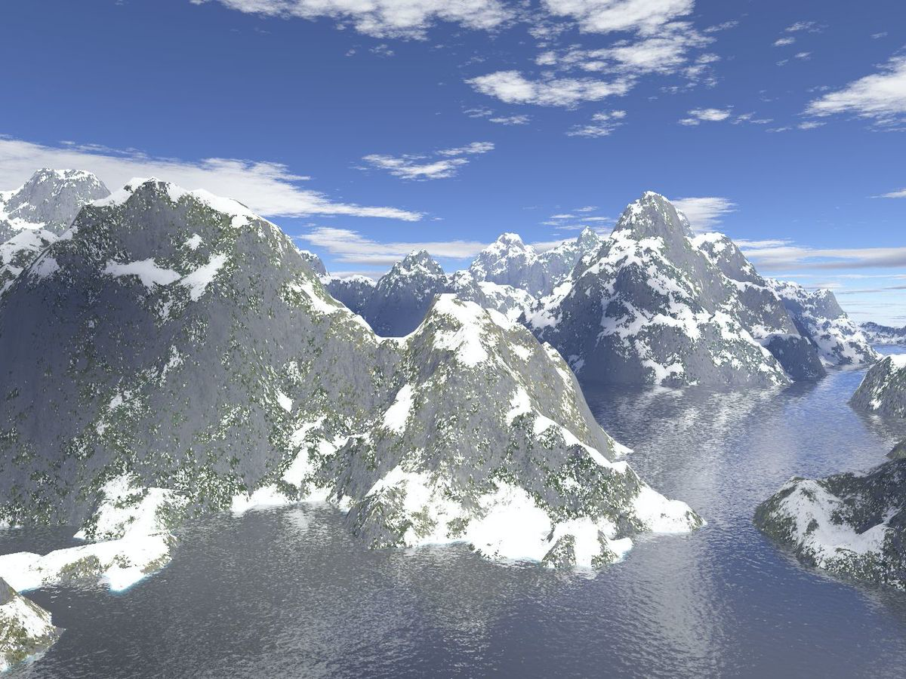
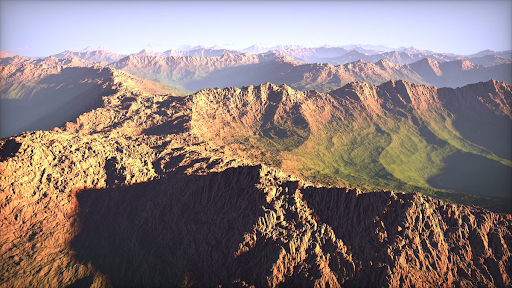
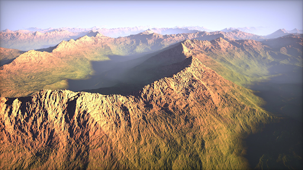
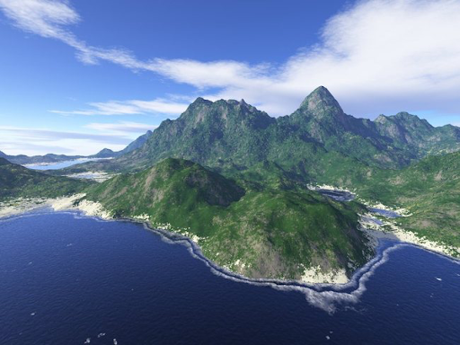

Generate a detailed realistic terrain using OpenGL/WebGL and perlin noise, including mountains and lakes with reflections and water movement.
The minimum implementation of our project (4.0) is a mountain range terrain generated by perlin noise with the appropriate elevation texture. We will also have phong lighting and shadows and we can move the camera around to explore the terrain. Our terrain will be significantly larger than the assignment 7 terrain and the mountains will have more detailed texture. The biggest problem we might encounter is to start the project on OpenGL because we have been working on WebGL the whole time. For example, moving the camera in WebGL is relatively easy, but in OpenGL, it might be really hard. If we spend too much time trying to set up the project in OpenGL, we can move to WebGL.
For a better grade (5.5), our implementation will include adding realistic water texture (e to our lakes with reflections of the terrain. We will also implement in our scene a sun and a moon and rotate them around our terrain rotation while changing the light source. Finally, we will add fog and clouds to our world.
For an exceptional grade (6.0), we can work on the additional features described below. We will choose an additional feature according to our interest and the time remaining.
Our final results want to be similar to the images presented above. There will be a sun and a moon rotating around our terrain which changes the lighting of our world. We can move around our world by rotating our camera.
Objectives:
From the project description
https://www.redblobgames.com/maps/terrain-from-noise/
Understanding perlin noise
https://flafla2.github.io/2014/08/09/perlinnoise.html
Using perlin noise to create terrain and water
https://gpfault.net/posts/perlin-noise.txt.html
Using Perlin Noise to Create a Terrain Mesh
https://www.scratchapixel.com/lessons/procedural-generation-virtual-worlds/perlin-noise-part-2/perlin-noise-terrain-mesh
Basic water tutorial
https://www.chinedufn.com/3d-webgl-basic-water-tutorial/
Texture & Modeling “A procedural approach” by Ken Perlin and others
Particles
https://learnopengl.com/In-Practice/2D-Game/Particles
https://www.3dgep.com/simulating-particle-effects-using-opengl/